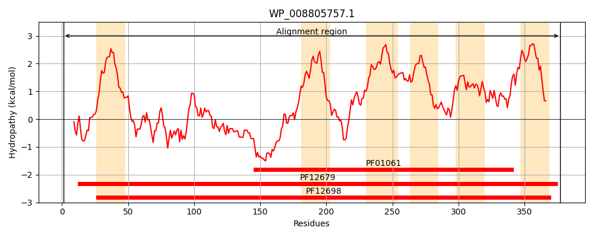
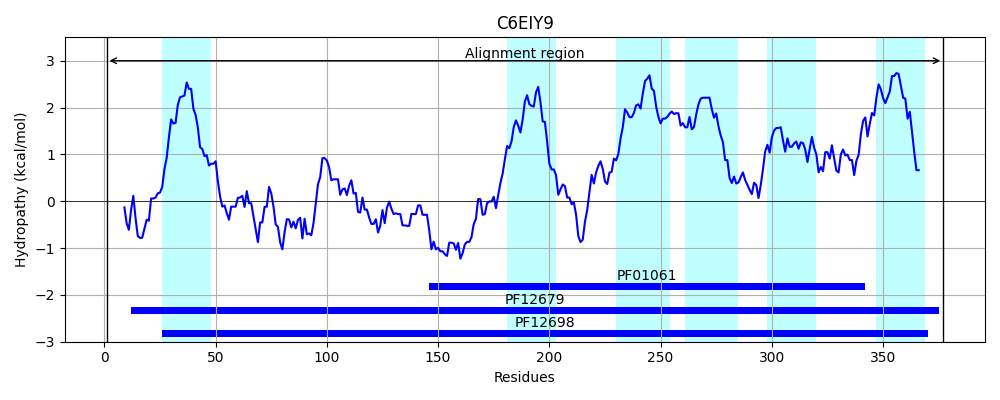
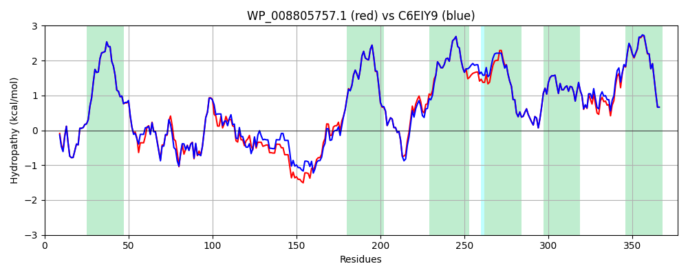

Hit Accession: C6EIY9
Hit TCID: 3.A.1.105.15
Hit Description: gnl|BL_ORD_ID|2593 gnl|TC-DB|C6EIY9|3.A.1.105.15 ABC-2 type transporter OS=Escherichia coli (strain B / BL21-DE3) GN=ybhS PE=4 SV=1
Mach Len: 377
e:0.000000
Query TMS Count : 6
Hit TMS Count: 6
TMS-Overlap Score: 7.000000
Predicted Substrates:CHEBI:23888;drug
BLAST Alignment:
Score: 1747 , Bit scores: 677 bits, E-value: 0.0e+00, Alignment length: 377, Percentage identity: 91
Query: 1 MSNSILSWRRVRALCVKETRQIVRDPSSWLIAVVIPLLLLFIFGYGINLDSSKLRVGVLLEQQSEEALDFVHTMTGSPYIDATVSDNRQQLIQMMQAGRIRAMVVIPVDFDRQMARAGADAPLQLITDGSEPNTANFAQGYVEGIWQIWQQQRAEDRGETFEPLIDVQMRYWFNPAAISQHFIIPGAITIIMTVVGAILTSLVVAREWERGTMEALLSTEITRAELLLCKLIPYYFLGMLAMLLCMLVSVFILGVPYRGSLPILFVITSLFLLSTLGMGLLISTITRNQFNAAQVALNAAFLPSIMLSGFIFQIDSMPAVIRAVTYVIPARYFVNTLQSLFLAGNIPVVLLVNVLFLIASAVMFIGLTWLKTKRRLD 377
MSN ILSWRRVRALCVKETRQIVRDPSSWLIAVVIPLLLLFIFGYGINLDSSKLRVG+LLEQ+SE ALDF HTMTGSPYIDAT+SDNRQ+LI MQAG+IR +VVIPVDF QM RA A AP+Q+ITDGSEPNTANF QGYVEGIWQIWQ QRAED G+TFEPLIDVQ RYWFNPAAISQHFIIPGA+TIIMTV+GAILTSLVVAREWERGTMEALLSTEITR ELLLCKLIPYYFLGMLAMLLCMLVSVFILGVPYRGSL ILF I+SLFLLSTLGMGLLISTITRNQFNAAQVALNAAFLPSIMLSGFIFQIDSMPAVIRAVTY+IPARYFV+TLQSLFLAGNIPVVL+VNVLFLIASAVMFIGLTWLKTKRRLD
Sbjct: 1 MSNPILSWRRVRALCVKETRQIVRDPSSWLIAVVIPLLLLFIFGYGINLDSSKLRVGILLEQRSEAALDFTHTMTGSPYIDATISDNRQELIAKMQAGKIRGLVVIPVDFAEQMERANATAPIQVITDGSEPNTANFVQGYVEGIWQIWQMQRAEDNGQTFEPLIDVQTRYWFNPAAISQHFIIPGAVTIIMTVIGAILTSLVVAREWERGTMEALLSTEITRTELLLCKLIPYYFLGMLAMLLCMLVSVFILGVPYRGSLLILFFISSLFLLSTLGMGLLISTITRNQFNAAQVALNAAFLPSIMLSGFIFQIDSMPAVIRAVTYIIPARYFVSTLQSLFLAGNIPVVLVVNVLFLIASAVMFIGLTWLKTKRRLD 377 | Protein Hydropathy Plots: |
|---|
|  |  |
Pairwise Alignment-Hydropathy Plot:
|
|---|
|  |